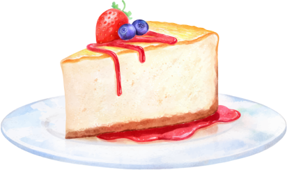

Fruit Cheesecake
This red berry cheesecake recipe is simply delicious! The combination of the sweetness from the strawberries with the slightly tangy flavor of the blueberries creates a fresh and balanced dessert. Moreover, the creamy texture of the cheesecake contrasts perfectly with the crunchiness of the cookie base. If you're looking for an easy-to-make dessert that will impress your guests, this is the ideal recipe.
Way of Preparation
Ingredients:- 200g of cornstarch cookies
- 100g of butter
- 300g of cream cheese
- 1 can of sweetened condensed milk
- 1/2 cup of lemon juice
- 1 tablespoon of unflavored gelatin powder
- 1 cup of chopped strawberries
- 1 cup of blueberries
- Crush the cornstarch cookies and mix them with melted butter. Line a mold and refrigerate.
- Beat the cream cheese, sweetened condensed milk, and lemon juice. Add the dissolved gelatin.
- Pour the mixture over the cookie base and refrigerate for 2 hours.
- Top with the chopped fruits and serve chilled.